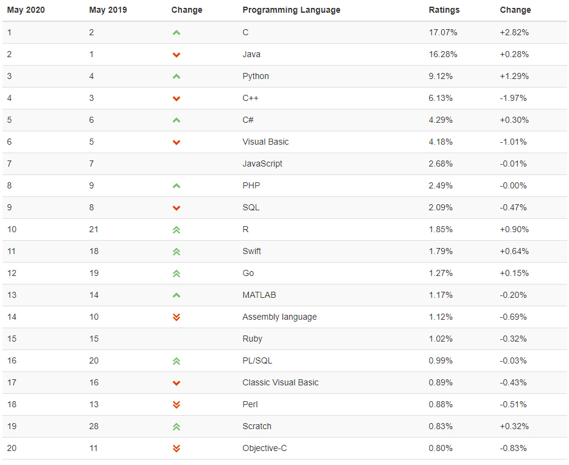

A brief history of programming languages
Genealogy of Common Languages

Zuse’s Plankalkül (1945)
- Never implemented
- Advanced data structures
- floating point, arrays, records
- Some features of the Plankalkül:
- only local variables
- functions do not support recursion
- only supports call by value
- composite types are arrays and tuples
- contains conditional expressions
- contains a for loop and a while loop
- no goto
Pseudocodes
- Short code; 1949; BINAC; Mauchly
- Expressions were coded, left to right
- Speedcoding; 1954; IBM 701, Backus
- Pseudo ops for arithmetic and math functions
- First implementation of decimal input/output operations
- Slow
- Only 700 words left for user program
FORTRAN (mid-late 1950’s)
- Emphasis on scientific programming
- FORTRAN 0 (not implemented) - 1954
- FORTRAN I - 1957
- FORTRAN II - 1958
- FORTRAN IV - 1960-62
- FORTRAN 77 - 1978
- FORTRAN 90 - 1990
- FORTRAN 95 - 1995
Dramatically changed forever the way computers are used
FORTRAN in depth
- FORTRAN II – 1958
- FORTRAN IV – 1960-62
- FORTRAN 77 – 1978
- Structured programming
- Processing of character-based data
- FORTRAN 90 – 1990
- Array, modular and generic programming
- FORTRAN 95 – 1995
LISP (1959)
- Designed at MIT by McCarthy
- Still the dominant language for AI
- Pioneered functional programming
- Syntax is based on lambda calculus
- Contemporary dialects: COMMON LISP, Scheme
- Object-oriented versions: Flavors, LOOPS, CLOS
- Related languages: ML, Miranda, Haskell
COBOL (1960)
- Based on FLOW-MATIC, which had:
- Names up to 12 characters, with embedded hyphens
- English names for arithmetic operators
- Data and code kept completely separate
- Verbs as the first word in every statement
- Contributions:
- Macros
- Hierarchical data structures
- Nested selection statements
- Long names with hyphens
- Separate data division
ALGOL
- Key language innovations:
- Nested block structure
- Lexical scoping
- How the language was described
ALGOL 68 (1968)
- Based on ALGOL 60
- Syntax and semantics became even more orthogonal
Pascal (1971)
- Designed for teaching structured programming
- Small, simple, nothing really new
- Many subsequent languages based on Pascal:
BASIC (1964)
- Intended for teaching how to program
- Designed by Kemeny & Kurtz at Dartmouth
- Current popular dialect: Visual BASIC
SIMULA 67 (1967)
- Introduced classes - data and operations together
- Designed primarily for system simulation
- Based on ALGOL 60 and SIMULA I
- Primary Contribution: Classes, objects, and inheritance
C (1972)
- Designed for systems programming
- Powerful set of operators
- Poor type checking
- Initially spread through UNIX
- Flexible, but unsafe
Smalltalk (1972-1980)
- Object-oriented programming language
- Really a graphical environment
- Developed at Xerox PARC
- First full implementation of an object-oriented language
- Pioneered the GUI everyone now uses
Prolog (1972)
- Logic language, non-procedural
- Programs are sets of facts and rules
- Not proven to be widely applicable
Scheme
- Developed at MIT in mid 1970s
- Small
- Extensive use of static scoping
- Functions as first-class entities
- Simple syntax (and small size) make it ideal for educational applications
C++ (1985)
- Design goal: no performance penalty, relative to C
- Features:
- Parameterized types (templates)
- Exception handling
- Operator overloading
- Facilities for object-oriented programming added to C
- Large and complex
- Rapidly grew in popularity, along with OOP
Ada 1983 (began in mid-1970s)
- Contributions:
- Packages; Exception handling; Generic program units; Concurrency
- Comments:
- Competitive design
- Included all that was then known about software engineering and language design
- First compilers were very difficult: Five years to develop the first really usable compiler
- Ada 95 (began in 1988)
- Support for OOP through type derivation
- New concurrency features
- More flexible libraries
Scripting Languages for the Web
- JavaScript
- Used in Web programming (client side) to create dynamic HTML documents
- PHP (1994)
- Server-side HTML-resident scripting language
- Purely interpreted
- Python
- An OO interpreted scripting language
Java (early 1990’s)
- Developed at Sun Microsystems
- Smaller, simpler, more reliable C++
- Significantly simplified
- All code must be encapsulated in classes
- Concurrency support (threads)
- Garbage collected
- JavaScript (1995)
- Began as LiveScript at Netscape
- Client-side HTML-resident scripting language
- Used for designing client-side dynamic documents
- Purely interpreted
C# (2000)
- Microsoft
- The primary language of the .NET platform
- A successor to both Java and C++
- Includes most of the features of Java,
with some modifications, as well as some of the features of C++
that were left out of Java
- Can be used for both .NET applications for the Web, as well as a general-purpose programming language
Summary
- Current trends:
- Increasing support for functional programming in mainstream languages used commercially
- Constructs to support concurrent and distributed programming
- Mechanisms for adding security and reliability verification to the language
- Component-oriented software development
- etc
TIOBE
